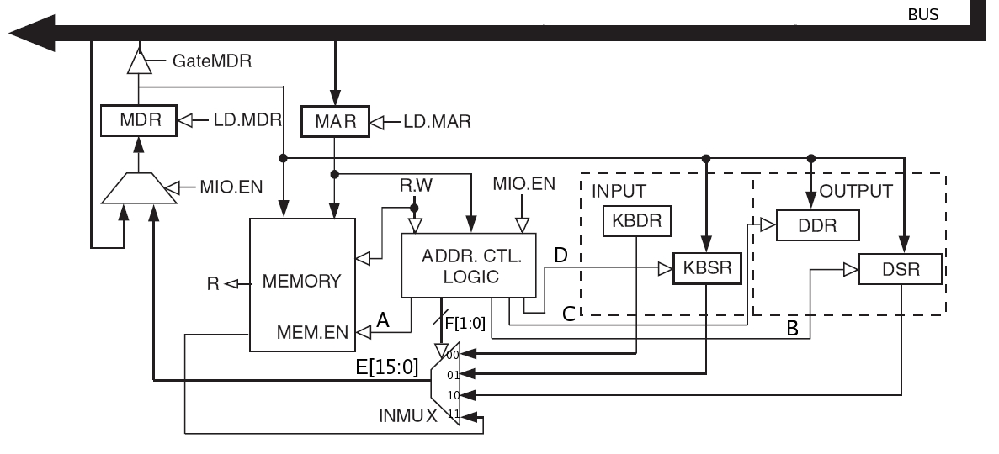

| 15 | 0 | |||||||||||||||
| x3000 | 0 | 0 | 1 | 0 | 0 | 0 | 0 | 0 | 0 | 0 | 0 | 0 | 0 | 1 | 0 | 0 |
| x3001 | 0 | 0 | 0 | 1 | 0 | 0 | 0 | 0 | 0 | 0 | 1 | 0 | 0 | 0 | 0 | 1 |
| x3002 | 1 | 0 | 1 | 1 | 0 | 0 | 0 | 0 | 0 | 0 | 0 | 0 | 0 | 0 | 1 | 1 |
| x3003 | 1 | 1 | 1 | 1 | 0 | 0 | 0 | 0 | 0 | 0 | 1 | 0 | 0 | 0 | 0 | 1 |
| x3004 | 1 | 1 | 1 | 1 | 0 | 0 | 0 | 0 | 0 | 0 | 1 | 0 | 0 | 1 | 0 | 1 |
| x3005 | 0 | 0 | 0 | 0 | 0 | 0 | 0 | 0 | 0 | 0 | 1 | 1 | 0 | 0 | 0 | 0 |
| x3006 | 0 | 1 | 0 | 0 | 0 | 0 | 0 | 0 | 0 | 0 | 0 | 0 | 0 | 0 | 0 | 1 |
The PC contains the value x3000, and the RUN button is pushed.
As the program executes, we keep track of all values loaded into the MAR. Such a record is often referred to as an address trace. It is shown below.
x3000
x3005
x3001
x3002
x3006
x4001
x3003
x0021
Jane Computer (Bob's adoring wife), not to be outdone
by her husband, decided to rewrite the TRAP x22 handler at a different place in
memory. Consider her implementation below. If a user writes a program that uses this
TRAP handler to output an array of characters, how many times is the ADD
instruction at the location with label A executed?
Assume that the user only calls this "new" TRAP x22 once. What is wrong with this TRAP handler?
Now add the necessary instructions so the TRAP handler executes properly.
Hint: RET uses R7 as linkage back to the caller.
TRAP handler needs to save the registers prior to using them within the handler. i.e.R1 in this case. R7 must saved before using TRAP x21 and restored afterwards.
; TRAP handler
; Outputs ASCII characters stored in consecutive memory locations.
; R0 points to the first ASCII character before the new TRAP x22 is called.
; The null character (x00) provides a sentinel that terminates the output sequence.
.ORIG x020F
START ST R7,SAVER7
ST R1,SAVER1
LDR R1, R0, #0
BRz DONE
ST R0, SAVER0
ADD R0, R1, #0
TRAP x21
LD R0, SAVER0
A ADD R0, R0, #1
BRnzp START
DONE LD R7,SAVER7
LD R1,SAVER1
RET
SAVER0 .BLKW #1
SAVER7 .BLKW #1
SAVER1 .BLKW #1
.END
How many
TRAPservice routines can be implemented in the LC-3? Why?Why must a
RETinstruction be used to return from aTRAProutine? Why won't aBRnzp(unconditionalBR) instruction work instead?How many accesses to memory are made during the processing of a
TRAPinstruction?
a. 256 TRAP service routines can be implemented. x0000- x00FF
b. RET stores the value of PC (before execution of the service routine) in R7 so that it can return control to the original program after execution of the service routine. A BRnzp would not work because:
- the TRAP routine may not be reached by a 9 bit offset.
- if TRAP is called multiple times, the computer would not know which LABEL to go to (can change every time).
c. 2 memory accesses are made during TRAP instruction
1st access:- instruction in fetch
2nd access:- trap vector table to get address of TRAP service routine
- What does the following LC-3 program do?
Solution.ORIG x3000 LD R3 , A STI R3, KBSR AGAIN LD R0,B TRAP X21 BRnzp AGAIN A .FILL X4000 B .FILL X0032 KBSR .FILL XFE00 .END
The keyboard interrupt is enabled, and the digit 2 is repeatedly written to the screen.
What are the defining characteristics of a stack? Give two implementations of a stack and describe their differences.
Solution: Stack is a storing mechanism. The concept of a stack is the specification of how it is to be accessed. That is, the defining ingredient of the stack is that the last thing you stored in it is the first things you remove from it. LAST IN FIRST OUT (LIFO)
Two Implementations and differences between them:
1. Stack in hardware: Stack pointer points to the top of the stack and data entries move during push or pop operations. (ex. Coin holder)
2. Stack in memory: Stack pointer points to the stack and moves during push or pop operations. Data entries do not move.
PUSH M - pushes the value stored at memory location M onto the operand stack.
POP M - pops the operand stack and stores the value into memory location M.
OP - Pops two values off the operand stack and performs the binary operation OP on the two values. The result is pushed back onto the operand stack.
Note: OP can be ADD, SUB, MUL, or DIV for parts a and b of this problem.
Note: See the stack machine supplemental handout for help on this problem.
- Draw a picture of the stack after each of the instructions below are executed.
What is the minimum number of memory locations that have to be used on the stack
for the purposes of this program? Also write an arithmetic equation expressing
u in terms of v, w, x, y, and z. The values u, v, w, x, y, and z are stored in
memory locations U, V, W, X, W, and Z.
PUSH V PUSH W PUSH X PUSH Y MUL ADD PUSH Z SUB DIV POP U - Write the assembly language code for a zero-address machine
(using the same type of instructions from part a) for calculating
the expression below. The values a, b, c, d, and e are stored in
memory locations A, B, C, D, and E.
e = ((a * ((b - c) + d))/(a + c))

Minimum number of memory locations required: 4
- (Note: There are multiple solutions to this problem.)
PUSH A PUSH B PUSH C SUB PUSH D ADD MUL PUSH A PUSH C ADD DIV POP E
1) Address of the next node
2) Starting address of the memory locations where name of the student is stored
3) Starting address of the memory locations where the his/her exam score is stored
in the given order. The first node is stored at the location x4000. The ASCII code x0000 is used as a sentinel to indicate the end of the string. Both the name and exam score are stored as strings.
Write down the student's name and score in the order that it appears in the list
Address Contents
x4000 x4016
x4001 x4003
x4002 x4008
x4003 x004D
x4004 x0061
x4005 x0072
x4006 x0063
x4007 x0000
x4008 x0039
x4009 x0030
x400A x0000
x400B x0000
x400C x4019
x400D x401E
x400E x004A
x400F x0061
x4010 x0063
x4011 x006B
x4012 x0000
x4013 x0031
x4014 x0038
x4015 x0000
x4016 x400B
x4017 x400E
X4018 x4013
x4019 x004D
x401A x0069
x401B x006B
x401C x0065
x401D x0000
x401E x0037
x401F x0036
x4020 x0000
Solution:Marc 90
Jack 18
Mike 76
(Adapted from 10.9) The input stream of a stack is a list of
all the elements we pushed onto the stack, in the order that we
pushed them. The input stream from Excercise 10.8 from page 284 of
the book for example is ABCDEFGHIJKLM
The output stream is a list
of all the elements that are popped off the stack in the order that
they are popped off.
a. If the input stream is ZYXWVUTSR, create
a sequence of pushes and pops such that the output stream is
YXVUWZSRT.
Push Z
Push Y
Pop Y
Push
X
Pop X
Push W
Push V
Pop V
Push U
Pop U
Pop
W
Pop Z
Push T
Push S
Pop S
Push R
Pop R
Pop
T
b. If the input stream is ZYXW, how many different
output streams can be created.
14 different
output streams.
Do Problem 6.16 on page 175 in the textbook.
(Adapted from 10.6) Rewrite the PUSH and POP routines such
that the stack on which they operate holds elements that take up two
memory locations each. Assume we are writing a program to simulate a stack machine that manipulates 32-bit integers with the LC-3. We would need PUSH and POP routines that operate with a stack that holds elements which take up two memory locations each. Rewrite the PUSH and POP routines for this to be possible.
The problem assumes
that each element of the value being pushed on the stack is
32-bits.
For the PUSH, assume bits [15:0] of that value to be
pushed are in R0 and bits [31:16] are in R1.
For the POP, bits
[15:0] will be popped into R0 and bits [31:16] will be popped into
R1.
Also assume the lower order bits of the number being pused or
popped are located in the smaller address in memroy. For example if
the two memory locations to be used to store the number are x2FFF
and x2FFE, bits [15:0] will be stored in x2FFE and [31:16] will be
stored in x2FFF.
PUSH:
ADD R6, R6, #-2
STR R0, R6,
#0
STR R1, R6, #1
POP:
LDR R0, R6, #0
LDR R1, R6,
#1
ADD R6, R6, #2
Consider the following LC-3 assembly language program. Assumming that the memory locations DATA get filled before the program executes, what is the relationship between the final values at DATA and the initial values at DATA?
.ORIG x3000
LEA R0, DATA
AND R1, R1, #0
ADD R1, R1, #9
LOOP1 ADD R2, R0, #0
ADD R3, R1, #0
LOOP2 JSR SUB1
ADD R4, R4, #0
BRzp LABEL
JSR SUB2
LABEL ADD R2, R2, #1
ADD R3, R3, #-1
BRp LOOP2
ADD R1, R1, #-1
BRp LOOP1
HALT
DATA .BLKW #10
SUB1 LDR R5, R2, #0
NOT R5, R5
ADD R5, R5, #1
LDR R6, R2, #1
ADD R4, R5, R6
RET
SUB2 LDR R4, R2, #0
LDR R5, R2, #1
STR R4, R2, #1
STR R5, R2, #0
RET
.ENDThe final values at DATA will be sorted in ascending order.
During the initiation of the interrupt service routine, the
N, Z, and P condition codes are saved on the stack. By means of a
simple example show how incorrect results would be generated if the
condition codes were not saved. Also, clearly describe the steps
required for properly handling an interrupt.
Lets
take the following program which adds 10 numbers starting at memory
location x4000 and stores the result at x5000.
.ORIG x3000
LD R1, PTR
AND R0, R0, #0
LD R2, COUNT
LOOP LDR R3, R1, #0
ADD R0, R0, R3
ADD R1, R1, #1
ADD R2, R2, #-1
BRp LOOP
STI R0, RESULT
HALT
PTR .FILL x4000
RESULT .FILL x5000
COUNT .FILL #10
If the condition codes were not saved as part
of initiation of the interrupt service routine, we could end up with
incorrect results. In this program, take the case when an interrupt
occurred during the processing of the instruction at location x3006
and the condition codes were not saved. Let R2 = 5 and hence the
condition codes would be N=0, Z=0, P=1, before servicing the
interrupt. When control is returned to the instruction at location
x3007, the BRp instruction, the condition codes depend on the
processing within the interrupt service routine. If they are N=0,
Z=1, P=0, then the BRp is not taken. This means that the result
stored is just the sum of the first five values and not all
ten.
Steps for handling interrupts:
Saving the State of the machine
Loading the state of the interrupt
Service the Interrupt
RTI
Note: In-depth explanation of interrupt
handling on pages 259-261 of the texbook.
The program below counts the number of zeros in a 16-bit word.
.ORIG x3000
AND R0, R0, #0
LD R1, SIXTEEN
LD R2, WORD
A BRn B
ADD R0, R0, #1
B ADD R1, R1, #-1
BRz C
ADD R2, R2, R2
BR A
C ST R0, RESULT
HALT
SIXTEEN .FILL #16
WORD .BLKW #1
RESULT .BLKW #1
.END
- Fill in the missing blanks below to make it work.
- After you have the correct answer above, what one instruction
can you change (without adding any instructions) that will make the
program count the number of ones instead?
Replace the BRn instruction with a BRzp.
Fill in the missing blanks so that the subroutine below
implements a stack multiply. That is it pops the top two elements
off the stack, multiplies them, and pushes the result back on the
stack. You can assume that the two numbers will be non-negative
integers (greater than or equal to zero) and that their product will
not produce an overflow. Also assume that the stack has been
properly initialized, the PUSH and POP subroutines have been written
for you and work just as described in class, and that the stack will
not overflow or underflow.
Note: All blanks must be filled
for the program to operate correctly.
MUL ST R7, SAVER7
ST R0, SAVER0
ST R1, SAVER1
ST R2, SAVER2
ST R5, SAVER5
AND R2, R2, #0
JSR POP
ADD R1, R0, #0
JSR POP
ADD R1, R1, #0
BRz DONE
AGAIN ADD R2, R2, R0
ADD R1, R1, #-1
BRp AGAIN
DONE ADD R0, R2, #0
JSR PUSH
LD R7, SAVER7
LD R0, SAVER0
LD R1, SAVER1
LD R2, SAVER2
LD R5, SAVER5
RET
The program below calculates the closest integer greater than
or equal to the square root of the number stored in NUM, and prints
it to the screen. That is, if the number stored in NUM is 25, "5"
will be printed to the screen. If the number stored in NUM is 26,
"6" will be printed to the screen. Fill in the blanks
below to make the program work.
Note: Assume that the value
stored at NUM will be between 0 an 81.
.ORIG x3000
AND R2, R2, #0
LD R3, NUM
BRz OUTPUT
NOT R3, R3
ADD R3, R3, #1
OUTLOOP ADD R2, R2, #1
ADD R0, R2, #0
AND R1, R1, #0
INLOOP ADD R1, R1, R2
ADD R0, R0, #-1
BRp INLOOP
ADD R1, R1, R3
BRn OUTLOOP
OUTPUT LD R0, ZERO
ADD R0, R0, R2
TRAP x21
HALT
NUM .BLKW 1
ZERO .FILL x30
.END
The figure below shows the part of the LC-3 data path that
deals with memory and I/O. Note the signals labeled A through F. A
is the memory enable signal, if it is 1 memory is enabled, if it is
0, memory is disabled. B, C, and D are the load enable signals for
the Device Registers. If the load enable signal is 1, the register
is loaded with a value, otherwise it is not. E is the 16-bit output
of INMUX, and F is the 2-bit select line for INMUX.

The
initial values of some of the processor registers and the I/O
registers, and some memory locations are as follows:
|
R0 = x0000 |
KBSR = x8000 |
M[x3009] = xFE00 |
During the entire instruction cycle, memory is accessed
between one and three times (why?). The following table lists two
consecutive instructions to be executed on the LC-3. Complete the
table with the values that each signal or register takes right after
each of the memory accesses performed by the instruction. If an
instruction does not require three memory accesses, draw a line
accross the unused accesses. To help you get started, we have filled
some of the values for you.
|
PC |
Instruction |
Access |
MAR |
A |
B |
C |
D |
E[15:0] |
F[1] |
F[0] |
MDR |
|
x3000 |
LD R0, x9 |
1 |
x3000 |
1 |
0 |
0 |
0 |
x2009 |
1 |
1 |
x2009 |
|
2 |
x300A |
1 |
0 |
0 |
0 |
xFE02 |
1 |
1 |
xFE02 |
||
|
3 |
--------- |
--- |
--- |
--- |
--- |
--------- |
------ |
------ |
--------- |
||
|
x3001 |
LDR R0, R0, #0 |
1 |
x3001 |
1 |
0 |
0 |
0 |
x6000 |
1 |
1 |
x6000 |
|
2 |
xFE02 |
0 |
0 |
0 |
0 |
x0061 |
0 |
0 |
x0061 |
||
|
3 |
--------- |
--- |
--- |
--- |
--- |
--------- |
------ |
------ |
--------- |
Note: This problem is NOT easy. In fact, it took me a while
to solve it, and I am supposed to be an expert on 306 material. So,
if you are struggling to pass this course, I suggest you ignore it.
On the other hand, if you are a hot shot and think no problem is
beyond you, then by all means go for it. We put it on the problem
set to keep some of the hot shots out of mischief. We would not put
it on the final, because we think it is too difficult to put on the
exam.
A programmer wrote this program to do something useful.
He, however, forgot to comment his code, and now can't remember what
the program is supposed to do. Your job is to save him the trouble
and figure it out for him. In 20 words or fewer tell us what
valuable information the program below provides about the value
stored in memory location INPUT. Assume that there is a non-zero
value at location INPUT before the program is executed.
HINT:
When testing different values of INPUT pay attention to their bit
patterns. How does the bit pattern correspond to the RESULT?
.ORIG x3000
LD R0, INPUT
AND R3, R3, #0
LEA R6, MASKS
LD R1, COUNT
LOOP LDR R2, R6, #0
ADD R3, R3, R3
AND R5, R0, R2
BRz SKIP
ADD R3, R3, #1
ADD R0, R5, #0
SKIP ADD R6, R6, #1
ADD R1, R1, #-1
BRp LOOP
ST R3, RESULT
HALT
COUNT .FILL #4
MASKS .FILL 0xFF00
.FILL 0xF0F0
.FILL 0xCCCC
.FILL 0xAAAA
INPUT .BLKW 1
RESULT .BLKW 1
.END
This program identifies the most significant bit position that is set in the value stored at INPUT and stores that bit position in RESULT. For example, if INPUT contained the value 0010 0100 0101 0110, RESULT would contain the value 13 since bit 13 is the most significant bit postition that is a 1.
Figure out what the following program does.
.ORIG X3000
LEA R2, C
LDR R1, R2, #0
LDI R6, C
LDR R5, R1, #-3
ST R5, C
LDR R5, R1, #-4
LDR R0, R2, #1
JSRR R5
AND R3, R3, #0
ADD R3, R3, #7
LEA R4, B
A STR R4, R1, #0
ADD R4, R4, #2
ADD R1, R1, #1
ADD R3, R3, #-1
BRP A
HALT
B ADD R2, R2, #1
LDR R0, R2, #0
JSRR R5
TRAP X29
ADD R2, R2, #15
ADD R0, R2, #3
LD R5, C
TRAP X2B
ADD R2, R2, #5
LDR R0, R2, #0
JSRR R5
TRAP X27
JSRR R5
JSRR R6
C .FILL X25
.STRINGZ "EE306 and tests are awesome"
.END
The short answer is that the program outputs “EE some” this is because we over write the trap vector table. Below is a commented version of the program to help you see what is going on.
.ORIG X3000 LEA R2, C LDR R1, R2, #0 ; load x25 into R1 LDI R6, C ; loads the starting address of the HALT trap service routine into R6 LDR R5, R1, #-3 ; loads the starting address of (x25 – 3) trap x22 (puts) into R5 ST R5, C ; stores the starting address or puts into C LDR R5, R1, #-4 ; loads the starting address of (x25 – 4) trap x21 (out) into r5 LDR R0, R2, #1 ; loads R0 with the first charater of the stringz “E” JSRR R5 ; does the out routine (outputs “E” to the display) AND R3, R3, #0 ; clears r3 ADD R3, R3, #7 ; makes r3 7 LEA R4, B ; loads the address of B into r4 ;NOTE Loop A overwrites the trap vector table, x25 to x2b ; This makes trap x25 – trap x2b point to this program, see label B and below A STR R4, R1, #0 ; overwrites the trap vector with the address in R4 ADD R4, R4, #2 ADD R1, R1, #1 ADD R3, R3, #-1 BRP A HALT ; What does this do? Trap x25, what is now at memory location x25? ;In the following section <- trap xY indicates what address is in memory location Y B ADD R2, R2, #1 ; <- trap x25 (makes R2 point to the first character in the stringz “E”) LDR R0, R2, #0 ; (loads r0 with the ascci code for “E“) JSRR R5 ; <- trap x26 (what is in r5? The starting address of out,outputs “E” on the screen) TRAP X29 ADD R2, R2, #15; <- trap x27 (makes r2 points to the (6 + 15) 21th character of the .stringz ADD R0, R2, #3 ; (makes to point to the (21+3) 24th character of the stringz the s in awesome) LD R5, C ; <- trap x28 (LD R5, C loads r5 with the starting address of puts) TRAP X2B ADD R2, R2, #5 ; <- trap x29 (“makes R2 point to the 6th character in the .stringz “ “) LDR R0, R2, #0 ; (loads r0 with the ascci code for “ “) JSRR R5 ; <- trap x2a (outputs a space on the screen) TRAP X27 JSRR R5 ; <- trap x2b (jsrr to puts outputs “some” to the screen) JSRR R6 ; remember r6 contains the starting address of trap x25 (halt) so this halts C .FILL X25 .STRINGZ "EE306 and tests are awesome" .END